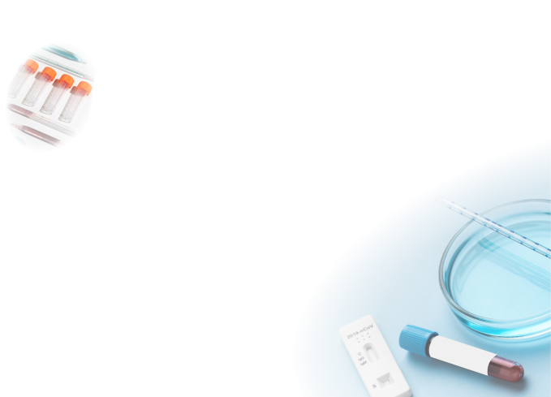

A method that measures the cloudiness or turbidity of a solution, often
used to determine the concentration of suspended particles.
Turnaround Time (TAT)
The time it takes from receiving a sample to delivering the test result.
Validation
The process of evaluating a test or
assay to ensure it produces accurate, reliable, and consistent results.
Verification
The confirmation that a particular test or procedure works as expected in
a specific setting or environment.
Western Blot
A method used to detect specific proteins in a sample after separation by
gel electrophoresis.
Absorbent Pad
Material that absorbs excess sample fluid on a test strip.
Analytical Interference
Substances that impact the test's analytical performance.
Analytical Phase
Phase involving the actual testing and analysis of the specimen.
Analytical Sensitivity
Test's ability to detect low levels of the target substance.
Analytical Specificity
Test's ability to detect only the target substance without interference.
Antibody
Protein produced by the immune system in response to an antigen.
Antigen
A substance that triggers an immune response, detected in tests for
infections.
Aseptic Technique
Procedures used to prevent contamination during specimen handling.
Assay
Test procedure used to measure the presence of a substance.
Batch Number
Identifier for a specific production batch of the test.
